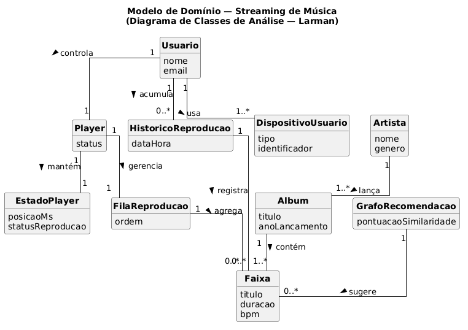
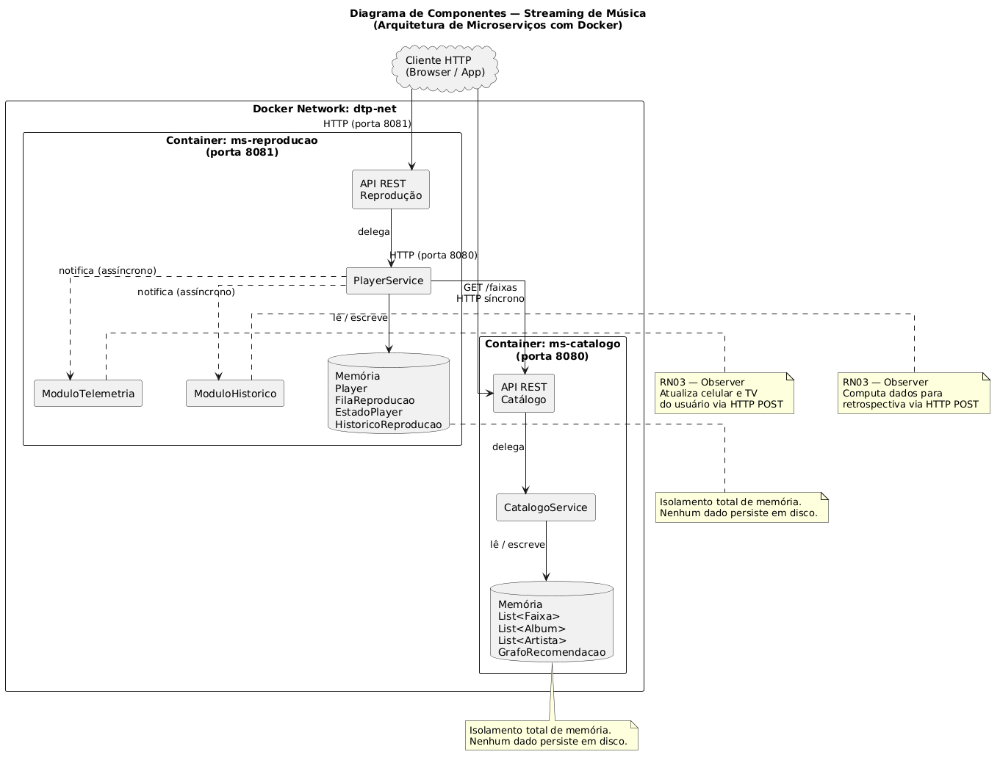
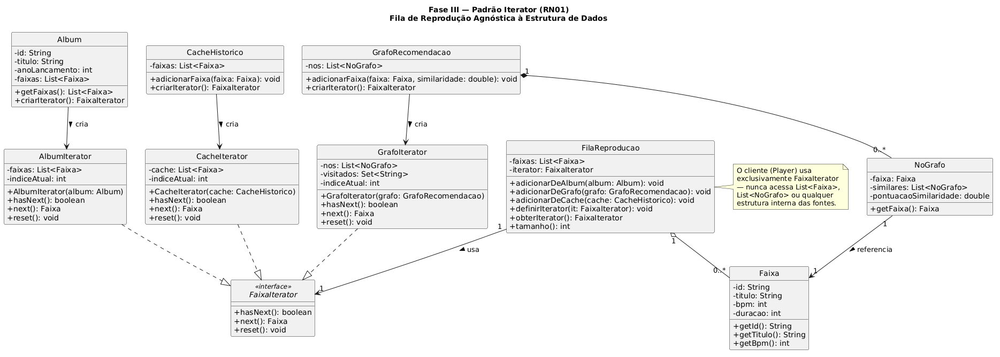
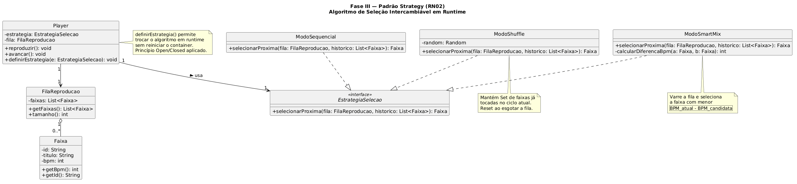
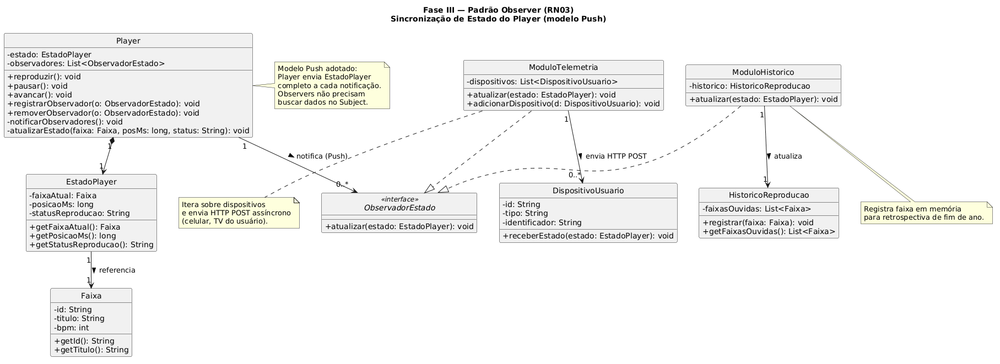
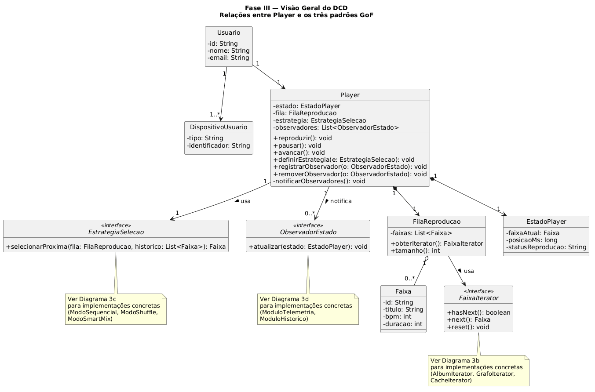

O trabalho foi desenvolvido com base no Tema B — Streaming de Música, composto por dois microserviços isolados: o ms-catalogo, responsável pelo acervo de faixas, álbuns e artistas, e o ms-reproducao, responsável pela gestão do player, da fila de reprodução e do histórico do usuário. Toda a gerência de estado é realizada estritamente em memória, sem qualquer banco de dados relacional ou NoSQL.
Map, Array, Set).Dockerfile; a orquestração é feita via docker-compose.yml, que configura a rede interna dtp-net e expõe as portas HTTP.| RN | Descrição | Padrão GoF (Fase III) |
|---|---|---|
| RN01 | A fila de reprodução agrega faixas de fontes heterogêneas (lista de álbum, grafo de recomendações, cache de histórico). O mecanismo de reprodução deve ser agnóstico quanto à estrutura de dados de origem. | Iterator |
| RN02 | O algoritmo de seleção da próxima faixa deve ser intercambiável em tempo de execução: Modo Sequencial, Modo Shuffle (sem repetição no ciclo) e Modo Smart Mix (menor diferença de BPM). | Strategy |
| RN03 | Alterações no estado do player (faixa atual, posição em ms, play/pause) devem notificar assincronamente o Módulo de Telemetria de Dispositivos e o Módulo de Histórico em Tempo Real. | Observer |
A Fase I aplica a abordagem de Larman para construção do Modelo de Domínio: apenas classes conceituais, atributos em linguagem natural e associações com multiplicidade e verbos de ligação. É terminantemente proibido incluir assinaturas de métodos, modificadores de acesso (+/-) ou tipos de dados de linguagem de programação.
| Classe | Atributos | Papel no Domínio |
|---|---|---|
Usuario | nome, email | Titular da conta; controla o player e acumula histórico |
Player | status | Componente central de reprodução; gerencia fila e estado |
EstadoPlayer | posicaoMs, statusReproducao | Snapshot do instante de reprodução (faixa, posição, play/pause) |
FilaReproducao | ordem | Agrega faixas de origens distintas; alimenta o player |
Faixa | titulo, duracao, bpm | Unidade de conteúdo; possui metadados para o Smart Mix |
Album | titulo, anoLancamento | Fonte linear de faixas; estrutura de lista |
Artista | nome, genero | Autor de álbuns |
GrafoRecomendacao | pontuacaoSimilaridade | Fonte de faixas via nós conectados por similaridade |
HistoricoReproducao | dataHora | Registro das faixas ouvidas; base para retrospectiva |
DispositivoUsuario | tipo, identificador | Celular, TV — receptores de telemetria do player |
| Origem | Verbo | Destino | Multiplicidade |
|---|---|---|---|
Usuario | controla | Player | 1 → 1 |
Player | mantém | EstadoPlayer | 1 → 1 |
Player | gerencia | FilaReproducao | 1 → 1 |
FilaReproducao | agrega | Faixa | 1 → 0..* |
Album | contém | Faixa | 1 → 1..* |
Artista | lança | Album | 1 → 1..* |
GrafoRecomendacao | sugere | Faixa | 1 → 0..* |
Usuario | acumula | HistoricoReproducao | 1 → 0..* |
HistoricoReproducao | registra | Faixa | 1 → 0..* |
Usuario | usa | DispositivoUsuario | 1 → 1..* |

Figura 1 — Modelo de Domínio seguindo o padrão Larman (sem métodos, modificadores de acesso ou tipos de linguagem)
O sistema é decomposto em dois microserviços isolados, cada um com sua própria memória interna e sem compartilhamento de estado.
A orquestração é feita via docker-compose.yml, que configura a rede interna dtp-net e expõe as portas HTTP ao cliente externo.
| Container | Porta | Responsabilidades | Estado em memória |
|---|---|---|---|
ms-catalogo |
8080 | CRUD de Faixas, Albums, Artistas e GrafoRecomendacao | Map<id,Faixa>, Map<id,Album>, Map<id,Artista>, GrafoRecomendacao |
ms-reproducao |
8081 | Gestão do Player, FilaReproducao, EstadoPlayer, HistoricoReproducao e Dispositivos | Player, FilaReproducao, EstadoPlayer, ModuloHistorico |
| Origem | Destino | Tipo | Exemplo de Rota | Propósito |
|---|---|---|---|---|
ms-reproducao |
ms-catalogo |
HTTP GET síncrono | GET /faixas/{id} |
Buscar dados de faixas para popular a fila |
ms-reproducao |
ModuloTelemetria | HTTP POST assíncrono | POST /telemetria/estado |
Notificar celular e TV do usuário (Observer RN03) |
ms-reproducao |
ModuloHistorico | Chamada interna assíncrona | — | Computar dados para a retrospectiva (Observer RN03) |
Isolamento de memória: nenhum objeto é compartilhado entre containers.
O ms-reproducao mantém apenas o ID da faixa em sua fila; os dados completos (título, BPM etc.)
são buscados sob demanda no ms-catalogo via HTTP GET síncrono, usando axios.

Figura 2 — Diagrama de Componentes: isolamento de memória por container e comunicação REST/HTTP na rede Docker
O Diagrama de Classes de Projeto (DCD) é a evolução direta do Modelo de Domínio da Fase I. Nesta fase, todos os atributos recebem tipos de dados, os métodos ganham assinaturas completas com parâmetros, a visibilidade é explicitada (+ / -) e os três padrões GoF são aplicados conforme o mapeamento mandatório do DTP. O DCD é apresentado em quatro diagramas complementares para garantir legibilidade.
A RN01 exige que o componente que consome a fila de reprodução seja completamente agnóstico quanto à estrutura de dados interna de cada fonte — lista linear de álbum, grafo de recomendações ou cache de histórico. O padrão Iterator resolve isso encapsulando a travessia atrás de uma interface uniforme.
FaixaIterator: define hasNext(): boolean, next(): Faixa e reset(): void — única interface que o cliente (FilaReproducao) conhece e utiliza.AlbumIterator: itera sobre Array<Faixa> de um álbum por índice. Implementação O(1) por acesso.GrafoIterator: percorre os nós do grafo de recomendações via BFS, controlando um Set de visitados para evitar ciclos.CacheIterator: itera sobre a lista linear do cache de busca, sem nenhum conhecimento de onde esses dados foram originados.FilaReproducao (agregado): aceita qualquer FaixaIterator via carregarFonte(iterator); drena o iterador para um buffer interno e jamais expõe a estrutura original.
Figura 3 — DCD do padrão Iterator: FaixaIterator e os três iteradores concretos
A RN02 exige que o comportamento de seleção da próxima faixa mude dinamicamente, sem reiniciar o container.
O padrão Strategy encapsula cada algoritmo em uma classe concreta intercambiável
em tempo de execução via Player.definirEstrategia().
EstrategiaSelecao: contrato único — selecionarProxima(buffer: Array<Faixa>, historico: Array<Faixa>): Faixa.ModoSequencial: segue estritamente a ordem de inserção na fila, esvaziando-a progressivamente com Array.shift().ModoShuffle: seleciona aleatoriamente sem repetir faixas no ciclo atual; mantém um Set interno de IDs já tocados.ModoSmartMix: varre o buffer e seleciona a faixa com menor |bpm_candidata - bpm_atual|, priorizando continuidade de ritmo.Player (contexto): delega a seleção à estratégia configurada; definirEstrategia() permite a troca em runtime — evidenciando o princípio Open/Closed.
Figura 4 — DCD do padrão Strategy: EstrategiaSelecao e os três modos concretos
A RN03 exige que mudanças no EstadoPlayer sincronizem automaticamente e de forma assíncrona
dois módulos independentes. O padrão Observer desacopla o Player
(Subject) dos módulos receptores (Observers).
ObservadorEstado: contrato único — atualizar(estado: EstadoPlayer): void.ModuloTelemetria: recebe o estado e envia HTTP POST assíncrono (fire-and-forget) para cada URL de dispositivo registrada.ModuloHistorico: recebe o estado e registra a faixa em Array<HistoricoReproducao> em memória, apenas quando posicaoMs === 0 (início de reprodução de nova faixa).Player (Subject): mantém _observers: Array<ObservadorEstado>; invoca _notificarObservadores() em toda mudança de estado.
Adotou-se o modelo Push: o Player envia o EstadoPlayer
completo a cada observer no momento da notificação. A escolha se justifica por três razões:
Player para buscar o estado — dobrando o tráfego entre microserviços.
No modelo Push, um único evento carrega tudo que o observer precisa.
atualizar(estado) carrega tudo
que o observer precisa; ele não mantém referência ao Subject nem conhece sua API de leitura,
reduzindo o acoplamento estrutural entre módulos.
EstadoPlayer é propagado a todos os observers, mesmo que não o utilizem.
Para o escopo deste sistema, onde EstadoPlayer possui apenas três campos
(faixaAtualId, posicaoMs, statusReproducao), esse custo é desprezível
e o benefício de desempenho de rede supera o aumento de acoplamento.
Em sistemas de larga escala, o Pull seria preferível quando os observers precisam de subconjuntos
diferentes do estado — evitando tráfego supérfluo.

Figura 5 — DCD do padrão Observer: Player como Subject notificando ModuloTelemetria e ModuloHistorico (modelo Push)
O diagrama a seguir apresenta a visão consolidada do DCD, mostrando o Player como contexto central
que integra os três padrões aplicados.

Figura 6 — Visão geral do DCD: Player integrando FaixaIterator (Iterator), EstrategiaSelecao (Strategy) e ObservadorEstado (Observer)
A implementação foi realizada em JavaScript (Node.js 20) com o framework Express, traduzindo fielmente cada classe e interface do DCD da Fase III. A seguir são apresentados os trechos de código mais relevantes de cada padrão, seguidos dos artefatos de infraestrutura.
projeto-software-dtp/ ├── ms-catalogo/ │ ├── src/ │ │ ├── iterators/ │ │ │ ├── FaixaIterator.js ← interface base │ │ │ ├── AlbumIterator.js │ │ │ ├── GrafoIterator.js │ │ │ └── CacheIterator.js │ │ └── repository/ │ │ └── GrafoRecomendacao.js │ ├── index.js │ ├── package.json │ └── Dockerfile ├── ms-reproducao/ │ ├── src/ │ │ ├── domain/ │ │ │ ├── EstadoPlayer.js │ │ │ └── FilaReproducao.js │ │ ├── strategies/ │ │ │ ├── EstrategiaSelecao.js ← interface base │ │ │ ├── ModoSequencial.js │ │ │ ├── ModoShuffle.js │ │ │ ├── ModoSmartMix.js │ │ │ └── ModoCronologico.js ← nova estratégia (demo Open/Closed) │ │ ├── observer/ │ │ │ ├── ObservadorEstado.js ← interface base │ │ │ ├── ModuloTelemetria.js │ │ │ └── ModuloHistorico.js │ │ └── player/ │ │ └── Player.js │ ├── index.js │ ├── package.json │ └── Dockerfile └── docker-compose.yml
O ponto central desta implementação é a garantia de que o cliente nunca acessa a coleção interna —
ele usa exclusivamente a interface FaixaIterator.
class FaixaIterator {
hasNext() { throw new Error('hasNext() não implementado'); }
next() { throw new Error('next() não implementado'); }
reset() { throw new Error('reset() não implementado'); }
}
module.exports = FaixaIterator;
ms-catalogo/src/iterators/AlbumIterator.js
const FaixaIterator = require('./FaixaIterator');
class AlbumIterator extends FaixaIterator {
constructor(faixas) { // faixas: Array — NUNCA exposto ao cliente
super();
this._faixas = faixas;
this._indice = 0;
}
hasNext() { return this._indice < this._faixas.length; }
next() { return this.hasNext() ? this._faixas[this._indice++] : null; }
reset() { this._indice = 0; }
}
module.exports = AlbumIterator;
ms-catalogo/src/iterators/GrafoIterator.js
const FaixaIterator = require('./FaixaIterator');
class GrafoIterator extends FaixaIterator {
constructor(adjacencias, noInicial) { // adjacencias: Map — NUNCA exposto ao cliente
super();
this._adj = adjacencias;
this._inicial = noInicial;
this._fila = [noInicial];
this._visitados = new Set([noInicial.id]);
}
hasNext() { return this._fila.length > 0; }
next() {
if (!this.hasNext()) return null;
const no = this._fila.shift();
for (const vizinho of (this._adj.get(no.id) ?? [])) {
if (!this._visitados.has(vizinho.id)) {
this._visitados.add(vizinho.id);
this._fila.push(vizinho);
}
}
return no.faixa;
}
reset() {
this._fila = [this._inicial];
this._visitados = new Set([this._inicial.id]);
}
}
module.exports = GrafoIterator;
ms-catalogo/src/iterators/CacheIterator.js
const FaixaIterator = require('./FaixaIterator');
class CacheIterator extends FaixaIterator {
constructor(cacheFaixas) { // cacheFaixas: Array — NUNCA exposto ao cliente
super();
this._cache = [...cacheFaixas];
this._indice = 0;
}
hasNext() { return this._indice < this._cache.length; }
next() { return this.hasNext() ? this._cache[this._indice++] : null; }
reset() { this._indice = 0; }
}
module.exports = CacheIterator;
O trecho abaixo, extraído da rota de álbum em ms-catalogo/index.js,
evidencia o encapsulamento total: o cliente usa exclusivamente
os métodos hasNext() e next() da interface — jamais manipula
album.faixas diretamente.
app.get('/albums/:id/iterator', (req, res) => {
const album = albums.get(req.params.id);
if (!album) return res.status(404).json({ erro: 'Album não encontrado' });
// Cliente só conhece a interface FaixaIterator — nunca acessa album.faixas
const iterator = new AlbumIterator(album.faixas);
const resultado = [];
while (iterator.hasNext()) {
resultado.push(iterator.next()); // única chamada: next()
}
res.json(resultado);
});
class EstrategiaSelecao {
// buffer: Array<Faixa>, historico: Array<Faixa> → Faixa | null
selecionarProxima(buffer, historico) {
throw new Error('selecionarProxima() não implementado');
}
}
module.exports = EstrategiaSelecao;
ms-reproducao/src/strategies/ModoSequencial.js
const EstrategiaSelecao = require('./EstrategiaSelecao');
class ModoSequencial extends EstrategiaSelecao {
selecionarProxima(buffer, _historico) {
return buffer.length > 0 ? buffer.shift() : null;
}
}
module.exports = ModoSequencial;
ms-reproducao/src/strategies/ModoShuffle.js
const EstrategiaSelecao = require('./EstrategiaSelecao');
class ModoShuffle extends EstrategiaSelecao {
constructor() { super(); this._tocadas = new Set(); }
selecionarProxima(buffer, _historico) {
const disponiveis = buffer.filter(f => !this._tocadas.has(f.id));
if (disponiveis.length === 0) { this._tocadas.clear(); return null; }
const escolhida = disponiveis[Math.floor(Math.random() * disponiveis.length)];
this._tocadas.add(escolhida.id);
buffer.splice(buffer.indexOf(escolhida), 1);
return escolhida;
}
}
module.exports = ModoShuffle;
ms-reproducao/src/strategies/ModoSmartMix.js
const EstrategiaSelecao = require('./EstrategiaSelecao');
class ModoSmartMix extends EstrategiaSelecao {
selecionarProxima(buffer, historico) {
if (buffer.length === 0) return null;
const atual = historico.at(-1);
if (!atual) return buffer.shift();
let melhor = buffer[0];
let menorDiff = Math.abs(melhor.bpm - atual.bpm);
for (const f of buffer) {
const diff = Math.abs(f.bpm - atual.bpm);
if (diff < menorDiff) { melhor = f; menorDiff = diff; }
}
buffer.splice(buffer.indexOf(melhor), 1);
return melhor;
}
}
module.exports = ModoSmartMix;
A nova estratégia abaixo, ModoCronologico, foi adicionada após
a modelagem inicial para demonstrar o princípio Open/Closed: o sistema foi aberto para extensão
sem qualquer modificação no Player, na rota HTTP ou nas outras estratégias — apenas
criando um novo arquivo e registrando-o no mapa de estratégias do index.js.
const EstrategiaSelecao = require('./EstrategiaSelecao');
class ModoCronologico extends EstrategiaSelecao {
selecionarProxima(buffer, _historico) {
if (buffer.length === 0) return null;
// Ordena por ano de lançamento crescente e retira o primeiro
buffer.sort((a, b) => (a.anoLancamento ?? 0) - (b.anoLancamento ?? 0));
return buffer.shift();
}
}
module.exports = ModoCronologico;
class ObservadorEstado {
atualizar(estado) { throw new Error('atualizar() não implementado'); }
}
module.exports = ObservadorEstado;
ms-reproducao/src/observer/ModuloTelemetria.js
const ObservadorEstado = require('./ObservadorEstado');
const axios = require('axios');
class ModuloTelemetria extends ObservadorEstado {
constructor(dispositivoUrls = []) {
super();
this._urls = dispositivoUrls;
}
atualizar(estado) {
// Fire-and-forget: não bloqueia o Subject
for (const url of this._urls) {
axios.post(url, estado).catch(() => {});
}
}
}
module.exports = ModuloTelemetria;
ms-reproducao/src/observer/ModuloHistorico.js
const ObservadorEstado = require('./ObservadorEstado');
class ModuloHistorico extends ObservadorEstado {
constructor() { super(); this._historico = []; }
atualizar(estado) {
// Registra somente quando uma nova faixa começa (posicaoMs === 0)
if (estado.statusReproducao === 'PLAYING' && estado.posicaoMs === 0) {
this._historico.push({
faixaId: estado.faixaAtualId,
titulo: estado.faixaAtualTitulo,
dataHora: new Date().toISOString()
});
}
}
obterHistorico() { return [...this._historico]; }
}
module.exports = ModuloHistorico;
ms-reproducao/src/player/Player.js
const EstadoPlayer = require('../domain/EstadoPlayer');
const ModoSequencial = require('../strategies/ModoSequencial');
class Player {
constructor() {
this._estado = new EstadoPlayer();
this._fila = null;
this._estrategia = new ModoSequencial();
this._observers = []; // Array<ObservadorEstado>
this._historico = []; // Array<Faixa> — para o SmartMix
}
// ── Gestão de Observers ──────────────────────────────────────────
registrar(observer) { this._observers.push(observer); }
remover(observer) { this._observers = this._observers.filter(o => o !== observer); }
_notificarObservadores() {
const snapshot = { ...this._estado }; // modelo Push: estado completo
for (const o of this._observers) o.atualizar(snapshot);
}
// ── Gestão de Estratégia ─────────────────────────────────────────
definirEstrategia(estrategia) { this._estrategia = estrategia; }
definirFila(fila) { this._fila = fila; }
// ── Operações do Player ──────────────────────────────────────────
play() {
this._estado.statusReproducao = 'PLAYING';
this._notificarObservadores();
return { ...this._estado };
}
pause() {
this._estado.statusReproducao = 'PAUSED';
this._notificarObservadores();
return { ...this._estado };
}
avancar() {
const buffer = this._fila?.obterBuffer() ?? [];
const proxima = this._estrategia.selecionarProxima(buffer, this._historico);
if (proxima) {
this._historico.push(proxima);
this._estado.faixaAtualId = proxima.id;
this._estado.faixaAtualTitulo = proxima.titulo;
this._estado.posicaoMs = 0;
this._estado.statusReproducao = 'PLAYING';
this._notificarObservadores();
}
return { ...this._estado };
}
obterEstado() { return { ...this._estado }; }
}
module.exports = Player;
| Serviço | Método | Rota | Descrição |
|---|---|---|---|
ms-catalogo:8080 |
GET | /faixas | Lista todas as faixas em memória |
| GET | /faixas/:id | Busca faixa por ID (consumido pelo ms-reproducao) | |
| POST | /faixas | Cadastra nova faixa | |
| POST | /albums | Cadastra álbum com lista de faixas | |
| GET | /albums/:id/iterator | Drena AlbumIterator e retorna lista de faixas | |
ms-reproducao:8081 |
POST | /player/fila | Carrega fila com array de IDs (busca no catálogo) |
| POST | /player/play | Inicia reprodução → notifica observers | |
| POST | /player/pause | Pausa reprodução → notifica observers | |
| POST | /player/proximo | Avança faixa usando a estratégia configurada | |
| PUT | /player/estrategia | Troca estratégia em runtime (body: {"modo":"shuffle"}) | |
| GET | /historico | Retorna histórico registrado pelo ModuloHistorico |
FROM node:20-alpine WORKDIR /app COPY package*.json ./ RUN npm ci --only=production COPY src/ ./src/ COPY index.js . EXPOSE 8080 CMD ["node", "index.js"]ms-reproducao/Dockerfile
FROM node:20-alpine WORKDIR /app COPY package*.json ./ RUN npm ci --only=production COPY src/ ./src/ COPY index.js . EXPOSE 8081 CMD ["node", "index.js"]
version: "3.9"
networks:
dtp-net:
driver: bridge
services:
ms-catalogo:
build:
context: ./ms-catalogo
container_name: ms-catalogo
networks:
- dtp-net
ports:
- "8080:8080"
environment:
- PORT=8080
ms-reproducao:
build:
context: ./ms-reproducao
container_name: ms-reproducao
networks:
- dtp-net
ports:
- "8081:8081"
depends_on:
- ms-catalogo
environment:
- PORT=8081
- CATALOGO_URL=http://ms-catalogo:8080
Para executar o sistema completo basta rodar docker compose up --build na raiz do repositório.
O ms-reproducao aguarda o ms-catalogo estar disponível antes de iniciar
(controlado por depends_on).
Nenhum dado é escrito em disco — toda a memória dos containers é volátil e reiniciada a cada docker compose down.
A seguência de chamadas abaixo evidencia o princípio Open/Closed em ação: o ModoCronologico
foi criado após a modelagem inicial sem modificar nenhuma classe existente. A troca acontece em tempo de
execução sem reiniciar o container — o Player é o único ponto de mudança.
# 1. Carregar fila com 3 faixas (anos de lançamento distintos)
curl -X POST http://localhost:8081/player/fila \
-H "Content-Type: application/json" \
-d '{"faixaIds": ["f1", "f2", "f3"]}'
# 2. Tocar no modo padrão (Sequencial)
curl -X POST http://localhost:8081/player/estrategia \
-H "Content-Type: application/json" \
-d '{"modo": "sequencial"}'
curl -X POST http://localhost:8081/player/proximo
# → retorna faixa na ordem de inserção
# 3. TROCAR para ModoCronologico em runtime (sem reiniciar o container)
curl -X PUT http://localhost:8081/player/estrategia \
-H "Content-Type: application/json" \
-d '{"modo": "cronologico"}'
curl -X POST http://localhost:8081/player/proximo
# → retorna a faixa com menor anoLancamento do buffer restante
Conforme justificado na Seção 4.3, a equipe adotou o modelo Push. A defesa deverá discutir formalmente:
EstadoPlayer. No Pull, os observers acoplam-se à API do Subject (precisariam chamar
player.obterEstado()). O Push troca acoplamento de dados por acoplamento estrutural
— preferível quando o estado é pequeno e estável.
EstadoPlayer,
o Push força todos os observers a receberem os dados novos. O Pull seria preferível se os observers
consumissem subconjuntos muito distintos do estado — evitando bytes desnecessários na serialização.
Para o escopo atual (3 campos, 2 observers), o Push é superior.
Conforme demonstrado na Seção 5.2, o cliente que lê a fila de reprodução faz uso exclusivo da
interface FaixaIterator: as únicas chamadas permitidas são hasNext(),
next() e reset(). Nenhuma rota, nenhum método do Player e
nenhum método da FilaReproducao acessa ou expõe album.faixas,
Map<NoGrafo> ou qualquer coleção interna das fontes.
O encapsulamento é garantido por design: as coleções internas são atributos privados
(prefixo _) dos iteradores concretos, tornando o acesso externo estruturalmente impossível
em JavaScript sem contornar a convenção deliberadamente.